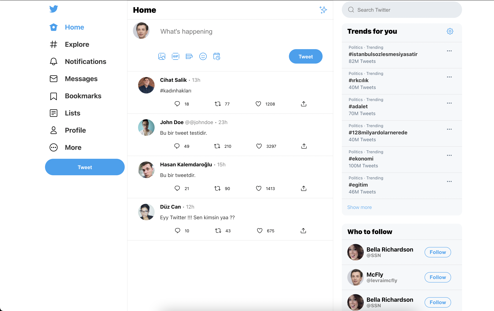

🐦 Twitter Clone
A nice example of a cool php project where we used Mysql to make a database with a like, comment and post system. This project is featured because this is one of the biggest achievements for me
View on GitHub

A nice example of a cool php project where we used Mysql to make a database with a like, comment and post system. This project is featured because this is one of the biggest achievements for me
View on GitHubA simple HTML/CSS portfolio — my first Git experience. Couldn't find the repo, so here's some music instead.
Worked in a group of 3 to build a combined site with a quiz, chatbot, and skill tree. I created the quiz.
Team project to clone Twitter using PHP and MySQL. Learned to collaborate on a single shared codebase.
Built a WordPress site for a real artist. The top project won a custom painting from him. Great hands-on experience.
Used object-oriented JavaScript to create a cookie clicker game. Learned structure, design, and logic separation.
Created an Android order app with Kotlin and SQLite database integration. Learned mobile app dev basics.